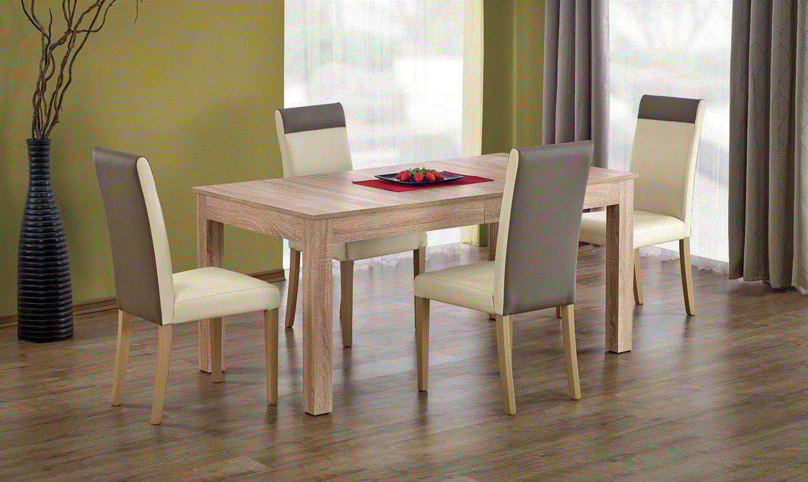

Rašomieji stalai ir jų priedai
 +370 656 65630 pardavimai@smartbaldai.lt Salonai Užsakymo būsena Elektroniniai baldų katalogai Patarimai Informacija Greitas apsipirkimas Saugus pristatymas Pinigų grąžinimo garantija Platus pasirinkimas Prisijungti Registruotis Prisijungti Registruotis Patikusios prekės (0) 0 Prekių krepšelis (0) 0
Jūsų prekių krepšelis tuščias
Svetainė Minkšti baldai Minkšti kampai Sofos Sofos lovos Foteliai Kušetės Pufai Sėdmaišiai Priežiūros priemonės Korpusiniai baldai Vitrinos Komodos Indaujos TV staliukai Transformuojami stalai Valgomojo stalai Kavos staliukai Valgomojo kėdės Baro kėdės Suolai Pastatomos lentynos Pakabinamos lentynos Miegamasis Lovos Dvigulės lovos Viengulės lovos Miego pagalvės Čiužiniai Antčiužiniai Spintos Komodos Kosmetiniai staliukai Spintelės prie lovos Vaikų kambarys Vaikiškos lovos Viengulės vaikiškos lovos Lova-mašina Dviaukštės lovos Kūdikių lovytės Patalynės dėžės Lovos priedai Vaikiški čiužiniai Sofos lovos Kušetės Foteliai Sėdmaišiai Pufai Rašomieji stalai ir jų priedai Rašomieji stalai Priedai rašomiesiams stalams Kėdės Vaikiškos spintos Lentyna knygoms Komodos Spintelės Patalynė Vaikų kambario aksesuarai Patalynė Darbo kambarys Darbo stalai Darbo kėdės Sofos Foteliai Žurnaliniai staliukai Interjero detalės Dekoratyvinės pagalvėlės Šviestuvai Lubiniai šviestuvai Sieniniai šviestuvai Staliniai šviestuvai Toršerai Namų kvapai Kilimai Veidrodžiai Kabinami laikrodžiai Kabyklos Užuolaidos Pledai Mediniai padėkliukai Kategorijos Svetainė Minkšti baldai Minkšti kampai Sofos Sofos lovos Foteliai Kušetės Pufai Sėdmaišiai Priežiūros priemonės Korpusiniai baldai Vitrinos Komodos Indaujos TV staliukai Transformuojami stalai Valgomojo stalai Kavos staliukai Valgomojo kėdės Baro kėdės Suolai Pastatomos lentynos Pakabinamos lentynos Miegamasis Lovos Dvigulės lovos Viengulės lovos Miego pagalvės Čiužiniai Antčiužiniai Spintos Komodos Kosmetiniai staliukai Spintelės prie lovos Vaikų kambarys Vaikiškos lovos Viengulės vaikiškos lovos Lova-mašina Dviaukštės lovos Kūdikių lovytės Patalynės dėžės Lovos priedai Vaikiški čiužiniai Sofos lovos Kušetės Foteliai Sėdmaišiai Pufai Rašomieji stalai ir jų priedai Rašomieji stalai Priedai rašomiesiams stalams Kėdės Vaikiškos spintos Lentyna knygoms Komodos Spintelės Patalynė Vaikų kambario aksesuarai Patalynė Darbo kambarys Darbo stalai Darbo kėdės Sofos Foteliai Žurnaliniai staliukai Interjero detalės Dekoratyvinės pagalvėlės Šviestuvai Lubiniai šviestuvai Sieniniai šviestuvai Staliniai šviestuvai Toršerai Namų kvapai Kilimai Veidrodžiai Kabinami laikrodžiai Kabyklos Užuolaidos Pledai Mediniai padėkliukai Produktų paieška Launch Live Ajax Search Pradžia Rašomieji stalai ir jų priedai Produktų filtrai Produktų filtraiRašomieji stalai ir jų priedai
Rekomenduojami Pigiausi Brangiausi Rodyti po: 21 33 45 57 Akcija Plotis 1140 mm Ilgis 620 mm Aukštis 800 mmDARK METAL stalas rašomasis
333.00 € 350.00 € Iki akcijos pabaigos liko: Akcija Plotis 1340 mm Ilgis 620 mm Aukštis 800 mmDARK METAL stalas rašomasis
370.00 € 389.00 € Iki akcijos pabaigos liko: Akcija Plotis 1340 mm Ilgis 620 mm Aukštis 800 mmWood metal rašomasis stalas
370.00 € 389.00 € Iki akcijos pabaigos liko: Akcija 5 d.d. Plotis 1140 mm Ilgis 620 mm Aukštis 800 mmWood metal rašomasis stalas
333.00 € 350.00 € Iki akcijos pabaigos liko: Akcija Plotis 1410 mm Ilgis 640 mm Aukštis 760 mmTRIO stalas rašomasis
370.00 € 389.00 € Iki akcijos pabaigos liko: Akcija 5 d.d. Plotis 1140 mm Ilgis 640 mm Aukštis 760 mmTRIO stalas rašomasis
196.00 € 206.00 € Iki akcijos pabaigos liko: Akcija Plotis 1380 mm Ilgis 580 mm Aukštis 750 mmBLACK WIDE rašomasis stalas
171.00 € 180.00 € Iki akcijos pabaigos liko: Akcija Plotis 1100 mm Ilgis 580 mm Aukštis 750 mmBLACK rašomasis stalas mažas
122.00 € 128.00 € Iki akcijos pabaigos liko: Akcija Plotis 1130 mm Ilgis 590 mm Aukštis 750 mmWHITE rašomasis stalas
122.00 € 128.00 € Iki akcijos pabaigos liko: Akcija Plotis 1380 mm Ilgis 580 mm Aukštis 750 mmWHITE stalas rašomasis platus
196.00 € 206.00 € Iki akcijos pabaigos liko: Akcija Plotis 1170 mm Ilgis 610 mm Aukštis 750 mmROMANTIC stalas rašomasis
360.00 € 379.00 € Iki akcijos pabaigos liko: Akcija Plotis 1060 mm Ilgis 610 mm Aukštis 750 mmROMANTICA stalas rašomasis
196.00 € 206.00 € Iki akcijos pabaigos liko: Akcija Plotis 1140 mm Ilgis 620 mm Aukštis 750 mmROYAL rašomasis stalas
245.00 € 258.00 € Iki akcijos pabaigos liko: Akcija Plotis 1200 mm Ilgis 680 mm Aukštis 750 mmFLORA rašomasis stalas
345.00 € 363.00 € Iki akcijos pabaigos liko: Akcija Plotis 1230 mm Ilgis 610 mm Aukštis 740 mmYAKUT stalas rašomasis
246.00 € 259.00 € Iki akcijos pabaigos liko: Akcija Plotis 1170 mm Ilgis 600 mm Aukštis 760 mmPIRATE stalas rašomasis
220.00 € 232.00 € Iki akcijos pabaigos liko: Akcija Plotis 1050 mm Ilgis 620 mm Aukštis 750 mmFLOWER rašomasis stalas
188.00 € 198.00 € Iki akcijos pabaigos liko: Akcija Plotis 1100 mm Ilgis 620 mm Aukštis 750 mmMOCHA rašomasis stalas
97.00 € 102.00 € Iki akcijos pabaigos liko: Akcija Plotis 1030 mm Ilgis 680 mm Aukštis 1510 mmRACE CUP rašomasis stalas
220.00 € 232.00 € Iki akcijos pabaigos liko: Akcija Plotis 1170 mm Ilgis 700 mm Aukštis 1960 mmCHAMPION RACER stalas rašom...
742.00 € 781.00 € Iki akcijos pabaigos liko: Akcija 5 d.d. Plotis 1070 mm Ilgis 680 mm Aukštis 760 mmCHAMPION RACER St stalas ra...
171.00 € 180.00 € Iki akcijos pabaigos liko: 1 2 3 4 5 Eiti į puslapį
„Smart baldai“ nuosekliai siekia, kad Jūsų namus puoštų išskirtinės kokybės, ergonomiški, daugiafunkciai ir ilgaamžiai baldai. Dėl šios priežasties asortimentą sudaro tik puikia reputacija pasižymintys, išskirtinės patirties turintys gamintojai. „Smart baldų“ komanda ypatingą dėmesį skiria baldų projektavimo ir dizaino naujovėms, kurios Jūsų namuose gali būti pritaikomos itin lengvai. Vienas iš pavyzdžių – darbo stalas. Tai – būtinas kiekvieno kambario komponentas.
Kodėl rašomasis stalas – būtinas?
Specialistų teigimu, individuali, privati erdvė reikalinga ir į mokyklą dar nepradėjusiam eiti vaikui, ir suaugusiam žmogui. Nepriklausomai nuo amžiaus, kambaryje nuolat judama, žaidžiama ar kitaip pramogaujama, leidžiama laiką. Dėl šios priežasties būtina pasirūpinti patogiu, prie skirtingų poreikių prisitaikančiu darbo stalu.
Ergonomiški rašomieji stalai. Kuo jie ypatingi?
Inovatyvūs ergonomiški, arba kitaip – „augantys“ stalai – tai rūpestingų ir praktiškų tėvų pasirinkimas. Šis baldas puikiai pritaikytas prie kintančių vaiko poreikių, todėl būsite užtikrinti, kad Jūsų atžala sėdi patogiai, taisyklingai. „Augantys“ stalai:
• Tausoja sveikatą. Šie baldai sukurti atsižvelgiant į vaiko fiziologijos ypatumus ir taisyklingos sėdėsenos principus. Tokie stalai yra lengvai reguliuojami, tad galite nustatyti tinkamiausią aukštį, kad jūsų vaikas sėdėtų tiesiai, nesusikūprinęs. Itin svarbu ir tai, jog taip tausojate savo vaiko regą. Šio baldo stalviršis taip pat lengvai reguliuojamas.
• Yra sumani investicija. „Augančių“ stalų aukštis lengvai reguliuojamas, todėl galite sutaupyti – vaikui paaugus, nereikės pirkti naujo baldo.
Ergonomiški rašomieji stalai – racionalus pasirinkimas patogesnei ir sveikesnei vaiko aplinkai sukurti. „Smart baldų“ kataloge taip pat rasite ir standartinių, nereguliuojamo dydžio stalų. Jie taip pat puikiai pritaikyti sėdėti patogiai ir saugiai, pasižymi funkcionaliu, patraukliu dizainu.
Stilingas stalas – originaliam kambariui sukurti
Kiekvienas nori turėti individualią, ypatingą erdvę. Pritaikius rašomuosius stalus, kambarį įrengti žaismingai, stilingai išties paprasta. „Smart baldų“ kataloge rasite skirtingų stilių stalų:
• Romantiškų . Tokie rašomieji stalai puikiai tiks tiek mergaitės, tiek moters kambariui įrengti. Pastelinių spalvų, subtiliomis ornamentikos detalėmis puošti romantiško stiliaus stalai pravers siekiantiems kambaryje jaukumo, lengvumo, svajingumo.
• Modernių. Rašomieji stalai su modernistiniais elementais puikiai tiks visiems nepriklausomai nuo lyties ar amžiaus. Tai – kryptingas pasirinkimas ir tiems, kurie siekia funkcionalios, paprastos aplinkos, lengvai pritaikomos kintantiems pomėgiams.
• Žaismingų . Tokie stalai tinka norint formuoti vaikui patrauklesnę erdvę, kurioje norėsis ruošti namų darbus ir leisti laisvalaikį. „Smart baldų“ komanda siūlo unikalaus dizaino rašomuosius stalus, sukurtus atsižvelgiant į mažųjų norus ir aukštus kokybės, saugumo standartus. Dinamiškas, originalaus dizaino stalas gali būti puiki dovana aktyviam, kūrybingam vaikui.
„Augantys“ ir standartiniai rašomieji stalai - tai investicija į sveikesnę, funkcionalesnę ir patrauklesnę, originalumu džiuginančią namų aplinką. Rinkitės iš plataus dizaino asortimento – visi „Smart baldų“ kataloge pristatomi stalai pasižymi tiek ilgaamžiškumu, tiek paprasta priežiūra.
DUK
Kodėl rašomieji stalai internetu iš Smartbaldai.lt verti dėmesio?
Čia rasite itin platų rašomųjų stalų pasirinkimą: tiek matmenų, tiek dizaino atžvilgiu. Tikime, kad šiame kataloge rasite stalą, kuris patiks net išrankiausiam mokslinčiui ir puikiai įsikomponuos jūsų namų interjere.
Kodėl rašomieji stalai internetu?
Tai yra puiki išeitis ieškantiems stalo, tačiau turintiems ribotus laiko išteklius. Kiekvienos prekės aprašyme rasite tikslius jo matmenis, todėl iškart žinosite, ar rašomasis stalas savo dydžiu tiks jūsų vaiko kambariui. Taip pat Smartbaldai.lt komanda pristato baldus į jūsų namus, o norintieji juos gali atsiimti ir patys. Atsiimti baldus galite šiuose mūsų salonuose-sandėliuose:
• Vilniaus raj., Riešėje: Beržų g. 7
• Kaune: Islandijos pl. 217-5
• Klaipėdoje: Baltijos pr. 10
• Alytuje: Naujoji g. 48a
Norime, kad tobulą baldą įsigytumėte lengvai, todėl siūlome platų prekių asortimentą ir pristatymą, kuris patogus jums.
Kaip pasirinkti tinkamą rašomąjį stalą?
Rašomasis stalas neretai yra vienas pagrindinių baldų vaiko kambaryje. Jį renkantis svarbu atsižvelgti į:
• vaiko ūgį;
• kambario interjerą;
• stalo funkcionalumą (ar yra pakankamai stalčių ir pan.);
• tai, ar stalas patiks mažajam.
Atsakingai apsvarsčius šiuos aspektus, rašomasis stalas džiugins jus ir vaiką ilgą laiką tiek funkcionalumu, tiek išvaizda.
Ar baldams suteikiama garantija?
Rašomasis stalas internetu, įsigytas Smartbaldai.lt, turi bent 24 mėn. trukmės garantiją. Jiems ją teikia gamintojai. Konkretaus stalo garantijos sąlygas galite rasti prekės aprašyme arba garantiniame talone.
Nuolaidos kuponas galioja tik vieną kartą
Vieno apsipirkimo metu galite panaudoti tik vieną kuponą
smartbaldai.lt
Specialūs pasiūlymai Apie mus Salonai Apmokėjimas KontaktaiPirkėjams
Garantija Privatumo politika Saugumo informacija Pristatymo informacija Prekių pirkimo taisyklės BALDINIŲ APMUŠALŲ UŽSAKYMASBendraukime
Facebook Instagram YoutubeAtsiliepimai
"Įsigijome stalą,nuostabų stalą!!! Be galo sunkus ir tvirtas, ir mums jis labai patinka!!! Kokybė super!" "Ačiū, kad padėjot išsirinkti. Viskas puikiai" "Puikūs baldai, greitas, tvarkingas prekių pristatymas." Žiūrėti visus... ©2019 UAB "Zbiga". Turinys, įskaitant nuotraukas, grafinius elementus ir svetainės dizainą yra saugomas pagal autorių teisių ir kitus intelektinės nuosavybės įstatymus. Sprendimas: Kad galėtume kokybiškai teikti paslaugas Jums, mes naudojame slapukus (cookie), kurie yra išsaugomi Jūsų kompiuteryje. Paspausdami SUTINKU, Jūs patvirtinate, kad esate informuotas apie slapukų naudojimą mūsų tinklalapyje. Atjungti slapukus Jūs galite savo naršyklės nustatymuose. Sutinku Plačiau